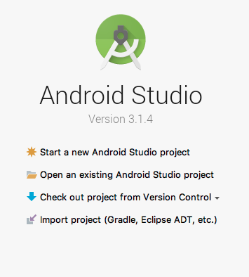

Introduction
Welcome to the Sensum Emotion AI API & SDK.
The SensumAPI and SensumSDK enables you to build services or products which respond to emotional events in real time.
Glossary of Terms
| Term | Description |
|---|---|
| SensumAPI | The SensumAPI is the RESTful API that is used either directly or through the SensumSDK |
| SensumSDK | SensumSDK refers to the Android SDK |
SensumAPI
Introduction
Scroll down for code samples, example requests and responses. Select a language for code samples from the tabs above or the mobile navigation menu.
SensumAPI enables you to access our emotional intelligence platform. Our API is designed to be RESTful, responding to HTTP requests with bodies in JSON format. All requests require that the Content-Type: application/json header be specified.
SensumAPI is also cross-origin resource sharing ready.
SensumSDK handles many of these requests and responses natively. It can however be useful to utilise the SensumAPI directly.
URI Structure
SensumAPI uses URI resources to provide access to its services. To use a RESTful API, your application will use HTTP Methods(GET, POST, etc.) to request and parse a response. SensumAPI uses JSON for communication between your application and the server.
An example URI: https://api.sensum.co/v0/testdata
Authorization
SensumAPI uses a combination of an API Key and request signing to authorize access. You can register a new API Key by contacting us.
SensumAPI expects each call to contain the following headers to gain access:
- Content-Type:
application/json - Authorization:
$AWSv4Signature - X-API-Key:
$YourAPIKey(For trial usage use “PublicDemoKeyForDocumentation”)
To calculate the value for the Authorization header you must calculate a hash of your request, add extra information, then add the AWS secret key in order to create a signing key and then use this to sign the request. To learn more about generating the Signature please read the AWS Documentation on Signature v4
When using the SDK, the signature will be automatically generated when making API calls through it.
Available Metrics
Below are the metrics that SensumAPI can analyse and the units that the data is posted in
| Metric Name | Unit |
|---|---|
heartrate |
bpm |
breathingrate |
bpm |
temperature |
oC, assumed to be ambient/external |
skintemperature |
oC |
gsr |
microsiemens* |
location_latitude |
deg |
location_longitude |
deg |
location_altitude |
m |
location_accuracy |
or location_accuracy_horizontal/vertical if available |
location_speed |
m/s |
acceleration |
linear acceleration in m/s2** |
acceleration_x |
m/s2 |
acceleration_y |
m/s2 |
acceleration_z |
m/s2 |
* The GSR Conductance unit ‘microsiemens’ is the inverse of the skin resistance; some devices return GSR as resistance in Ohms and this must be converted before upload, i.e. if a device returns values in x kOhms, the conversion is 1/(1000*x)
** All acceleration values should exclude gravity and be in m/s2
SensumAPI Analysis Responses
| Input Metric(s) | Generated Events | Generated Records | Generated Stats |
|---|---|---|---|
| any | Events for that Metric | Stats for that event | |
heartrate |
arousal |
arousal (See Fuzzy Class Stats) |
|
gsr |
engagement |
engagement (See Fuzzy Class Stats) |
|
acceleration_[x,y,z] |
activity |
activity (See Fuzzy Class Stats) |
Events
| Event Fields | Type | Meaning |
|---|---|---|
time |
UTC Timestamp (ms) | Time of event |
value |
String: One of [‘normal’, ‘rising’, ‘falling’, ‘max’, ‘min’] | Type of event (normal is not currently used) |
severity |
Float | Relative severity of the event, i.e. how much of value change between forward/backward events with respect to the average value |
Stats
| Stats Field | Type | Meaning |
|---|---|---|
avg |
Float | average (mean) value |
duration |
Float (seconds) | time between first and last analysed records |
max |
Float | max value |
min |
Float | min value |
std |
Float | standard deviation of the record |
percentiles |
Object(dict) | 10th, 50th, and 90th percentile values |
Fuzzy Class Stats
For “fuzzy” classification outputs such as arousal, engagement and activity, an additional stats structure is used containing 3 fields:
| Field | Type | Meaning |
|---|---|---|
value |
Float | [0-1] activation value |
dominant |
string | label of the dominant classification category |
sectors |
Object(dict) | per-category-label activivation i.e {label:value,...} |
Current Sector Labels (highest to lowest activation value):
- Activity :
active,inactive - Arousal :
excited,activated,calm,passive,relaxed - Engagement:
highly engaged,engaged,activated,neutral
Send text data to analyse emoji and text sentiment
This endpoint allows users to send strings of text to our service for emotional sentiment analysis.
The service will return a JSON object that contain Positivity, Negativity and Emotionality values for emojis and text.
HTTP Request
POST https://api.sensum.co/v0/sentiment
Glossary
| Term | Description |
|---|---|
positivity |
The level of positive emotion expressed in an input(Scale: 0 to +1) |
negativity |
The level of negative emotion expressed in an input(Scale: 0 to +1) |
emotionality |
The overall strength of emotion contained in an input(Scale: -1 to +1)* |
- Values greater than 0 imply positive feelings, values less than 0 imply negative feelings while 0 implies no emotional response.
Code samples
var headers = {
'Content-Type':'application/json',
'Authorization' : 'AWS Sig v4 Key',
'x-api-key' : 'PublicDemoKeyForDocumentation'
};
var data = {
"text":"👌👌👌"
};
$.ajax({
url: 'https://api.sensum.co/v0/sentiment',
method: 'post',
data: JSON.stringify(data);
headers: headers,
success: function(data) {
console.log(JSON.stringify(data));
}
})
const request = require('node-fetch');
const headers = {
'Content-Type':'application/json',
'Authorization' : 'AWS Sig v4 Key',
'x-api-key' : 'PublicDemoKeyForDocumentation'
};
var data = {
"text":"👌👌👌"
};
fetch('https://api.sensum.co/v0/sentiment',
{
method: 'POST',
body : body,
headers: headers
})
.then(function(res) {
return res.json();
}).then(function(body) {
console.log(body);
});
import requests
headers = {
'Content-Type':'application/json',
'Authorization' : 'AWS Sig v4 Key',
'x-api-key' : 'PublicDemoKeyForDocumentation'
}
data = {
"text":"👌👌👌"
}
r = requests.post('https://api.sensum.co/v0/sentiment', data=data, headers = headers)
print r.json()
Responses
| Status | Meaning | Description |
|---|---|---|
| 200 | OK | 200 response |
Examples
Please refer to the code samples for request and response examples
Text Only - Unemotional
Request
{
"text": "This is nothing"
}
Response
{
"emoji_sentiment": null,
"text_sentiment": {
"emotionality": 0.0, //Aggregate Emotionality Score from -1,+1
"negativity": 0.0, // Negativity Score from 0 to +1
"positivity": 0.0 // Positivity Score from 0 to +1
}
}
Text Only - Emotional
Request
{
"text": "This was a very good test"
}
Response
{
"emoji_sentiment": null,
"text_sentiment": {
"positivity": 0.444,
"negativity": 0.0,
"emotionality": 0.4927
}
}
Emoji
Request
{
"text":"👌👌👌"
}
Response
{
"text_sentiment": {
"negativity": 0.0,
"positivity": 0.0,
"emotionality": 0.0
},
"emoji_sentiment": {
"positivity": 0.6575529733,
"negativity": 0.0936431989,
"emotionality": 0.4236068641
}
}
Send data for events analysis
This endpoint allows the user to send data to the Emotion AI service for analysis. The response will return a series of significant events.
An event is triggered when there is a statistically significant timeseries change detected in an incoming data stream, be that from a Bluetooth sensor or internal sensor such as Accelerometer. Depending on the data stream applied, this can indicate a shift or change in emotional or activity state.
The severity of an event is dependent on
How “steep” the event is and
How “isolated” the event is with respect to any events identified before / after it.
HTTP Request
POST https://api.sensum.co/v0/events
Code samples
var headers = {
'Content-Type':'application/json',
'Authorization': 'AWS_Sig v4 Key',
'x-api-key': 'Public'
};
var data = {
"records": {
"heartrate": [
{
"time": 1502807187332,
"value": 111.77347523527911
},
{
"time": 1502807188332,
"value": 112.89604978090439
},
{
"time": 1502807189332,
"value": 112.37719504311998
},
{
"time": 1502807190332,
"value": 113.68469103590627
},
{
"time": 1502807191332,
"value": 113.67799449012763
},
{
"time": 1502807192332,
"value": 112.71988545819869
},
{
"time": 1502807193332,
"value": 113.05775062793727
},
{
"time": 1502807194332,
"value": 114.53499763344529
},
{
"time": 1502807195332,
"value": 115.4964191594706
},
{
"time": 1502807196332,
"value": 115.31744641217797
}
]
}
};
$.ajax({
url: 'https://api.sensum.co/v0/events',
method: 'post',
data: JSON.stringify(data),
headers: headers,
success: function(data) {
console.log(JSON.stringify(data));
}
})
const request = require('node-fetch');
const inputBody = '{
"records": {
"heartrate": [
{
"time": 1502807187332,
"value": 111.77347523527911
},
{
"time": 1502807188332,
"value": 112.89604978090439
},
{
"time": 1502807189332,
"value": 112.37719504311998
},
{
"time": 1502807190332,
"value": 113.68469103590627
},
{
"time": 1502807191332,
"value": 113.67799449012763
},
{
"time": 1502807192332,
"value": 112.71988545819869
},
{
"time": 1502807193332,
"value": 113.05775062793727
},
{
"time": 1502807194332,
"value": 114.53499763344529
},
{
"time": 1502807195332,
"value": 115.4964191594706
},
{
"time": 1502807196332,
"value": 115.31744641217797
}
]
}
}
';
const headers = {
'Content-Type':'application/json',
'Authorization' : 'AWS Sig v4 Key',
'x-api-key' : 'PublicDemoKeyForDocumentation'
};
fetch('https://api.sensum.co/v0/events',
{
method: 'POST',
body: inputBody,
headers: headers
})
.then(function(res) {
return res.json();
}).then(function(body) {
console.log(body);
});
import requests
headers = {
'Content-Type':'application/json',,
'Authorization' : 'AWS Sig v4 Key',
'x-api-key' : 'PublicDemoKeyForDocumentation'
}
data = {
"records": {
"heartrate": [
{
"time": 1502807187332,
"value": 111.77347523527911
},
{
"time": 1502807188332,
"value": 112.89604978090439
},
{
"time": 1502807189332,
"value": 112.37719504311998
},
{
"time": 1502807190332,
"value": 113.68469103590627
},
{
"time": 1502807191332,
"value": 113.67799449012763
},
{
"time": 1502807192332,
"value": 112.71988545819869
},
{
"time": 1502807193332,
"value": 113.05775062793727
},
{
"time": 1502807194332,
"value": 114.53499763344529
},
{
"time": 1502807195332,
"value": 115.4964191594706
},
{
"time": 1502807196332,
"value": 115.31744641217797
}
]
}
}
r = requests.post('https://api.sensum.co/v0/events', params = data, headers = headers)
print r.json()
Body parameter
{
"records": {
"heartrate": [
{
"time": 1502807187332,
"value": 111.77347523527911
},
{
"time": 1502807188332,
"value": 112.89604978090439
},
{
"time": 1502807189332,
"value": 112.37719504311998
},
{
"time": 1502807190332,
"value": 113.68469103590627
},
{
"time": 1502807191332,
"value": 113.67799449012763
},
{
"time": 1502807192332,
"value": 112.71988545819869
},
{
"time": 1502807193332,
"value": 113.05775062793727
},
{
"time": 1502807194332,
"value": 114.53499763344529
},
{
"time": 1502807195332,
"value": 115.4964191594706
},
{
"time": 1502807196332,
"value": 115.31744641217797
}
]
}
}
Responses
| Status | Meaning | Description |
|---|---|---|
| 200 | OK | Successful request |
Response Headers
| Status | Header | Type | Format | Description |
|---|---|---|---|---|
| 200 | Access-Control-Allow-Origin | string |
Example responses
{
"events":{
"heartrate":[
{"time":1502807187000,"value":"min","severity":0.03176537181134584},
{"time":1502807196000,"value":"max","severity":0.03176537181134584}
]
},
"stats":{
"heartrate":{
"avg":113.55359048765672,
"duration":9,
"max":115.4964191594706,
"min":111.77347523527911,
"std":1.175057115344551,
"percentiles":{"10":112.3168230623359,"50":113.36787255903245,"90":115.33534368690724}}
},
"records":{
"arousal":[
{"time":1502807187332,"value":5.359549491038813e-15},
{"time":1502807188332,"value":0.052921639437207874},
{"time":1502807189332,"value":0.028461220785887004},
{"time":1502807190332,"value":0.09010062973692541},
{"time":1502807191332,"value":0.08978493383721622},
{"time":1502807192332,"value":0.044616707881203976},
{"time":1502807193332,"value":0.06054471797280525},
{"time":1502807194332,"value":0.13018671519236316},
{"time":1502807195332,"value":0.17551110237516387},
{"time":1502807196332,"value":0.16707377298958567}
]
},
"exec_time":0.12196207046508789
}
Errors
SensumAPI uses the following error codes:
| Error Code | Meaning |
|---|---|
| 400 | Bad Request - Your Request may have caused an error |
| 401 | Unauthorized - This error will likely occur if the Cognito Authorization Header (AWS Signature v4) is either missing or invalid. |
| 403 | Forbidden -This error will likely occur if the API Key Header is either invalid or missing. |
| 405 | Method Not Allowed - You have attempted to make a request using a HTTP Method that is invalid for the requested resource. |
| 429 | Too Many Requests - You have made more requests than is allowed under the usage plan. |
| 500 | Internal Server Error - There is an error with our service |
| 503 | Service Unavailable - Our service is down for maintenance. Please try again later. |
SensumSDK - Android
Android Device Compatibility
The Android version of SensumSDK can be installed on devices with 6.0 (Marshmallow) up to 8.0 (Oreo).
We recommend the Samsung S6, S7, S8, OnePlus X and above or the Google Pixel as suitable devices for reliable bluetooth functionality.
Bluetooth Device Compatibility
- The Android SensumSDK supports connecting to BLE and Bluetooth devices for reading heart rate measurements. For a list of tested compatible devices please contact us - hello@sensum.co
Note: This document is regularly updated with new devices. Please contact us for integration details. GSR data is only accessible from Shimmer devices at present.
Accepted Biometric Data Inputs
The Android SensumSDK can accept the following metrics:
- Heart Rate
- GSR
- Location Latitude
- Location Longitude
- Location Altitude
- Location Accuracy
- Location Speed
- Acceleration
- Acceleration X
- Acceleration Y
- Acceleration Z
Service Constants
These constants can be used to construct message bundles that are then relayed to the Emotion AI service to send and retrieve data.
One example of a call to the service would be to send credentials in order to authenticate a user. See “Submit Credentials to service for authorization” for an example in how these bundles are constructed.
API Base URL
public static final String API_BASEURL = "api-baseurl"
This is used to pass the base url for API to the SensumSDK service which is used for setting up communication with the SensumAPI
API Key
public static final String API_KEY = "api-key"
This is used to pass the API key to the SensumSDK service which is used for setting up communication with the SensumAPI
Google Id Token
public static final String GOOGLE_ID_TOKEN = "google-id-token"
This is used to pass the Google id token to the SensumSDK service which is used for setting up communication with the SensumAPI
Google Web Client Id
public static final String GOOGLE_WEB_CLIENT_ID = "google-web-client-id"
This is used to pass the Google web client id to the SensumSDK service which is used for setting up communication with the SensumAPI
Google Login
public static final int GOOGLE_LOGIN = 126
This is used to pass a google login message to the SensumSDK service
Login Filter
public static final String LOGIN_FILTER = "login-filter"
This is used to pass a message from the SensumSDK service which is used as an intent filter at the front end for the user login
Identity Pool Id
public static final String IDENTITY_POOL_ID = "identity-poolid"
This is used to pass the AWS identity pool id to the SensumSDK service which is used for user authentication
Heart Rate Filter
public static final String HR_FILTER = "hr-filter"
This is used to pass a message from the SensumSDK service which is used as an intent filter at the front end for receiving the heart rate value
Heart Rate Event Filter
public static final String HR_EVENT_FILTER = "hr-event-filter"
This is used to pass a message from the SensumSDK service which is used as an intent filter at the front end for receiving the heart rate events from the SensumAPI
Heart Rate Arousal Filter
public static final String AROUSAL_FILTER = "arousal-filter"
This is used to pass a message from the SensumSDK service which is used as an intent filter at the front end for receiving the heart rate arousal from the SensumAPI
GPS Filter
public static final String GPS_FILTER = "gps-filter"
This is used to pass a message from the SensumSDK service which is used as an intent filter at the front end for receiving the GPS values
Speed Value
public static final String SPEED_VALUE = "speed-value"
This is used to pass the captured GPS speed value
Latitude Value
public static final String LATITUDE_VALUE = "latitude-value"
This is used to pass the captured GPS latitude value
Longitude Value
public static final String LONGITUDE_VALUE = "longtitude-value"
This is used to pass the captured GPS longitude value
Altitude Value
public static final String ALTITUDE_VALUE = "altitude-value"
This is used to pass the captured GPS altitude value
Bearing Value
public static final String BEARING_VALUE = "bearing-value"
This is used to pass the captured GPS bearing value
Accuracy Value
public static final String ACCURACY_VALUE = "accuracy-value"
This is used to pass the captured GPS accuracy value
GPS Event Filter
public static final String GPS_EVENT_FILTER = "gps-event-filter"
This is used to pass a message from the SensumSDK service which is used as an intent filter at the front end for receiving the GPS events from the SensumAPI
Accelerometer Filter
public static final String ACC_FILTER = "acc-filter"
This is used to pass a message from the SensumSDK service which is used as an intent filter at the front end for receiving the accelerometer values
X Value
public static final String X_VALUE = "x-value"
This is used to pass the captured accelerometer x value
Y Value
public static final String Y_VALUE = "y-value"
This is used to pass the captured accelerometer y value
Z Value
public static final String Z_VALUE = "z-value"
This is used to pass the captured accelerometer z value
Accelerometer Event Filter
public static final String ACC_EVENT_FILTER = "acc-event-filter"
This is used to pass a message from the SensumSDK service which is used as an intent filter at the front end for receiving the accelerometer events from the SensumAPI
Accelerometer Registration
public static final String ACC_FAILED_REGISTERED = "accelerometer-registration"
This is used to pass a message from the SensumSDK service which is used as an intent filter at the front end for checking accelerometer registration
GSR Filter
public static final String GSR_FILTER = "gsr-filter"
This is used to pass a message from the SensumSDK service which is used as an intent filter at the front end for receiving the GSR values
GSR Event Filter
public static final String GSR_EVENT_FILTER = "gsr-event-filter"
This is used to pass a message from the SensumSDK service which is used as an intent filter at the front end for receiving the GSR events from the SensumAPI
Extra Data
public static final String EXTRA_DATA = "extra-data"
This is used to bundle up extra data to the intents
Acceleration Capture
public static final String ACCELERATION_CAPTURE = "acceleration-capture"
This is used to enable/disable capturing of accelerometer data which is sent to the SensumAPI
GPS Capture
public static final String GPS_CAPTURE = "gps-capture"
This is used to enable/disable capturing of GPS data which is sent to the SensumAPI
HR Capture
public static final String HR_CAPTURE = "heartrate-capture"
This is used to enable/disable capturing of heart rate data which is sent to the SensumAPI
Input Capture
public static final String INPUT_CAPTURE = "input-capture"
This is used to enable/disable capturing of text/emoji data which is sent to the SensumAPI
GSR Capture
public static final String GSR_CAPTURE = "gsr-capture"
This is used to enable/disable capturing of GSR data which is sent to the SensumAPI
Data Rate Send
public static final String DATA_RATE_SEND = "send-rate"
This is used to pass the interval rate (in milliseconds) for the data to be sent to the SensumAPI
API Response
public static final String API_RESPONSE = "api-response"
This is used to pass message from the SensumSDK service for the SensumAPI response
Toast Message
public static final String TOAST_MESSAGE = "toast-message"
This is used to pass informative toast message from the SensumSDK service
Input Sentiment Text
public static final int INPUT_SENTIMENT_TEXT = 128
This is used to filter/pass text & emoji message for sentiment analysis to the SensumSDK service
Emoji Sentiment Filter
public static final String EMOJI_SENTIMENT_FILTER = "emoji-sentiment-filter"
This is used to pass Emoji value to the SensumSDK service which is passed to the API for Sentiment analysis
Text Sentiment Filter
public static final String TEXT_SENTIMENT_FILTER = "text-sentiment-filter"
This is used to pass Text value to the SensumSDK service which is passed to the API for Sentiment analysis
Emotionality
public static final String EMOTIONALITY = "emotionality"
This is used to pass a message from the SensumSDK service which is used as an intent filter at the front end for receiving Emotionality value (Sentiment Analysis) from the SensumAPI
Positivity
public static final String POSITIVITY = "positivity"
This is used to pass a message from the SensumSDK service which is used as an intent filter at the front end for receiving Positivity value (Sentiment Analysis) from the SensumAPI
Negativity
public static final String NEGATIVITY = "negativity"
This is used to pass a message from the SensumSDK service which is used as an intent filter at the front end for receiving Negativity value (Sentiment Analysis) from the SensumAPI
Cancel Capture
public static final int CANCEL_CAPTURE = 112
This is used to cancel sending of the captured data to the SensumAPI
Start Capture
public static final int START_CAPTURE = 113
This is used to start sending of the captured data to the SensumAPI
Hello
public static final int HELLO = 127
This is used for the initial communication between developer and frontend to demo how it works
Hello Filter
public static final String HELLO_FILTER = "hello-filter"
This is used to filter for hello at the front end
Device Name
public static final String DEVICE_NAME = "device-name"
This is used to get the connected device name
Device Address
public static final String DEVICE_ADDRESS = "device-address"
This is used to get the connected device address
Connection
public static final String CONNECTION = "connection"
This is used to pass a connection message from the SensumSDK service to the front end
BLE Scan
public static final int BLE_SCAN = 102
This is used to pass a BLE scan message to the SensumSDK service
Connect BLE Device
public static final int CONNECT_BLE = 101
This is used to pass a connect BLE device message to the SensumSDK service
BLE Connection Filter
public static final String BLE_CONNECTION_FILTER = "ble-connected-filter"
This is used to pass a BLE connection message from the SensumSDK service which is used as an intent filter at the front end
BLE Device Filter
public static final String BLE_DEVICE_FILTER = "ble-filter"
This is used to pass a message from the SensumSDK service which is used as an intent filter at the front end for the connected ble device
BLE Device Name
public static final String BLE_DEVICE_NAME = "ble-device-name"
This is used to pass the BLE device name from the SensumSDK service
Disconnect BLE Device
public static final int DISCONNECT_BLE = 134
This is used to disconnect a BLE device
BLE Connectivity
public static final String BLE_CONNECTIVITY = "ble-connectivity"
This is used to pass a BLE connectivity message from the SensumSDK service to the front end
Connected Devices
public static final int CONNECTED_DEVICES = 136
This is used to pass a message to the SensumSDK to get the connected device names
Connected Devices Filter
public static final String CONNECTED_DEVICES_FILTER = "connected-devices-filter"
This is used to filter for the connected devices
Bluetooth Device Name
public static final String BLUETOOTH_DEVICE_NAME = "bluetooth-device-name"
This is used to pass the bluetooth device name from the SensumSDK service
Bluetooth Scan
public static final int BLUETOOTH_SCAN = 107
This is used to pass a bluetooth scan message to the SensumSDK service
Disconnect Bluetooth Device
public static final int DISCONNECT_BLUETOOTH = 135
This is used to disconnect a bluetooth device
Connect Bluetooth Device
public static final int CONNECT_BLUETOOTH_DEVICE = 108
This is used to pass a connect bluetooth device message to the SensumSDK service
Bluetooth Connectivity
public static final String BT_CONNECTIVITY = "bt-connectivity"
This is used to pass a bluetooth connectivity message from the SensumSDK service to the front end
Bluetooth Connection Filter
public static final String BLUETOOTH_CONNECTION_FILTER = "bluetooth-connected-filter"
This is used to filter for bluetooth connection at the front end
Bluetooth Device Filter
public static final String BLUETOOTH_DEVICE_FILTER = "bluetooth-device-filter"
This is used to filter for bluetooth device at the front end
Device Disconnected
public static final String DEVICE_DISCONNECTED = "com.example.bluetooth.le.ACTION_GATT_DISCONNECTED"
This is used to pass a message from the SensumSDK service in case of any device disconnection
Realm Response
public static final String REALM_RESPONSE = "realm-response"
This is used to pass message from the SensumSDK service for data manipulation in realm for a session
Example Methods
Examples available in the ‘Android’ tab.
Initiate connection to service
// class fields
Messenger mServiceMessenger;
SdkService mService;
boolean mIsBound;
private final ServiceConnection mConnection = new ServiceConnection() {
@Override
public void onServiceConnected(ComponentName componentName, IBinder iBinder) {
SdkService.LocalBinder binder = (SdkService.LocalBinder) iBinder;
mService = binder.getService();
mServiceMessenger = mService.mServiceMessenger;
if (!mIsBound) {
mIsBound = true;
}
}
@Override
public void onServiceDisconnected(ComponentName componentName) {
// handle disconnect
}
};
private final ServiceConnection mConnection = new ServiceConnection()
Connection made to the service. Once bound to the service, the binder object is passed through to messenger to set it up.
Submit Credentials to service for authorization (Google Sign-In)
void submit() {
Bundle bundle = new Bundle();
bundle.putString(API_BASEURL, apiBaseUrl);
bundle.putString(API_KEY, apiKey);
bundle.putString(IDENTITY_POOL_ID, identityPoolId);
bundle.putString(GOOGLE_ID_TOKEN, googleIdToken);
bundle.putString(GOOGLE_WEB_CLIENT_ID, googleWebClientId);
sendToService(bundle, GOOGLE_LOGIN);
}
Follow Google’s instructions to add Google Sign-In to your application.
Once successfully implemented you must send the Google Id token for the Google Sign-In application to us to authenticate access. You can contact us at hello@sensum.co.
void submit()
Sets up the credential bundle to be sent to the SensumSDK service this needs to be sent first to the SensumSDK service as only authenticated users can use the service.
Send a data message to the service
public void sendToService(Bundle bundle, int argValue) {
Message message = Message.obtain();
message.arg1 = argValue;
message.setData(bundle);
try {
mServiceMessenger.send(message);
} catch (RemoteException e) {
e.printStackTrace();
}
}
public void sendToService(Bundle bundle, int argValue)
Send message to the service.
- Parameters:
bundle— any data that needs passed to the serviceargValue— for service handler to switch on
Create New Broadcast Receiver Object
private BroadcastReceiver mMessageReceiver = new BroadcastReceiver() {
@Override
public void onReceive(Context context, Intent intent) {
String action = intent.getAction();
switch (action) {
case HELLO_FILTER:
Toast.makeText(MainActivity.this, intent.getStringExtra(EXTRA_DATA), Toast.LENGTH_LONG).show();
break;
case GPS_FILTER:
Bundle gpsBundle = intent.getBundleExtra(EXTRA_DATA);
break;
case ACC_FILTER:
Bundle accBundle = intent.getBundleExtra(EXTRA_DATA);
break;
case HR_FILTER:
String hrValue = intent.getStringExtra(EXTRA_DATA);
break;
case GSR_FILTER:
String gsrValue = intent.getStringExtra(EXTRA_DATA);
break;
case API_RESPONSE:
String apiResponse = intent.getStringExtra(EXTRA_DATA);
break;
case TOAST_MESSAGE:
String toastMessage = intent.getStringExtra(EXTRA_DATA);
break;
case EMOJI_SENTIMENT_FILTER:
Bundle emojiSentimentBundle = intent.getBundleExtra(EXTRA_DATA);
break;
case TEXT_SENTIMENT_FILTER:
Bundle textSentimentBundle = intent.getBundleExtra(EXTRA_DATA);
break;
case CONNECTED_DEVICES_FILTER:
String btDeviceName = intent.getStringExtra(ServiceConstants.BLUETOOTH_DEVICE_NAME);
break;
case BLE_DEVICE_FILTER:
ArrayList<BluetoothDevice> bledeviceList = intent.getParcelableArrayListExtra
(EXTRA_DATA);
for (BluetoothDevice bleDevice: bledeviceList) {
Log.d("BleDevice", bleDevice.getName() + " " + bleDevice.getAddress());
}
break;
case BLUETOOTH_DEVICE_FILTER:
ArrayList<BluetoothDevice> bluetoothDevices = intent.getParcelableArrayListExtra(EXTRA_DATA);
for (BluetoothDevice bluetoothDevice : bluetoothDevices) {
Log.d("BluetoothDevice", bluetoothDevice.getName() + " " + bluetoothDevice
.getAddress());
}
break;
}
}
};
private BroadcastReceiver mMessageReceiver = new BroadcastReceiver()
Broadcast receiver with the list of registered filters.
Update IntentFilter with new Actions
private IntentFilter updateIntentFilter() {
final IntentFilter intentFilter = new IntentFilter();
intentFilter.addAction(HELLO_FILTER);
intentFilter.addAction(GPS_FILTER);
intentFilter.addAction(ACC_FILTER);
intentFilter.addAction(HR_FILTER);
intentFilter.addAction(GSR_FILTER);
intentFilter.addAction(API_RESPONSE);
intentFilter.addAction(TOAST_MESSAGE);
intentFilter.addAction(HR_EVENT_FILTER);
intentFilter.addAction(AROUSAL_FILTER);
intentFilter.addAction(GSR_EVENT_FILTER);
intentFilter.addAction(EMOJI_SENTIMENT_FILTER);
intentFilter.addAction(TEXT_SENTIMENT_FILTER);
intentFilter.addAction(CONNECTED_DEVICES_FILTER);
return intentFilter;
}
private IntentFilter updateIntentFilter()
- Returns: an intent filter with a list of actions.
Start Biometric Data Capture
private void startCaptureSetUp() {
sendToService(getCaptureBundle(), START_CAPTURE);
}
private void startCaptureSetUp()
Starts capturing of biometric/contextual data.
Get Capture Bundle
private Bundle getCaptureBundle() {
Bundle bundle = new Bundle();
bundle.putBoolean(ACCELERATION_CAPTURE, true);
bundle.putBoolean(HR_CAPTURE, true);
bundle.putBoolean(GPS_CAPTURE, true);
bundle.putBoolean(GSR_CAPTURE, true);
bundle.putBoolean(INPUT_CAPTURE, true);
bundle.putLong(DATA_RATE_SEND, 20 * 1000);
return bundle;
}
private Bundle getCaptureBundle()
Sets up the bundle data for capture using the service constants.
- Returns: capture bundle
Stop Biometric Data Capture
private void stopCaptureSetUp() {
sendToService(getCaptureBundle(), CANCEL_CAPTURE);
}
private void stopCaptureSetUp()
Stops capturing of biometric/contextual data.
Tutorial - Android SDK
Introduction
This tutorial is designed to assist Android Developers working with the SensumSDK and SensumAPI.
It is intended to provide a detailed guide to using the Sensum Emotion AI toolkit, providing code examples and guidelines for use.
Have fun and enjoy!
Requirements
- Android Studio 3.0 or newer for best compatibility.
- Sensum SDK in the form of an .aar file.
- Shimmer module in the form of an .aar file.
Getting Started
- Open Android Studio. Select Start a new Android Studio project as displayed in Figure 1.

Figure 1 - Start New Project
- Provide a name for your project, for example: ‘SensumTutorialApplication’, then click Next (see Figure 2).
Figure 2 - Create New Project
- Select the Phone and Tablet option from the Target Android Devices dialogue window.
- We recommend you use API 23: Android 6.0 (Marshmallow) or greater for best performance (see Figure 3).

Figure 3 - Select Platforms
- Click Next and select Empty Activity as shown in Figure 4.

Figure 4 - Add Activity
- Click Next in order to configure the Empty Activity, provide an appropriate title for the Activity (for example ‘MainActivity’, as shown in Figure 5).
Figure 5 - Customize the Activity
Managing Module Dependencies
- From the File menu, navigate to File > New > New Module (Figure 6).

Figure 6 - Creating A New Module
- The New Module dialogue window will appear.
- Select the Import .JAR/.AAR Package option (Figure 7).
- Click Next.

Figure 7 - Import .JAR/.AAR Package
- The Create New Module dialogue window will appear (shown in Figure 8).
- In order to successfully create a new module, the developer must locate the necessary sdk-release.aar file on their system we provided.
Figure 8 - Create New Module
- Once the sdk-release file has been located, click Finish.
- In order to link the sdk-release file to the project as a dependency, the developer must navigate to File > Project Structure, from the File menu (Figure 9).

Figure 9 - Project Structure
- You will be presented with the Project Structure dialogue window.
- At the left-hand-side of the dialogue, select mobile from the Modules section.
- Click the Dependencies tab, then click the ‘+’ button (top right-hand-side of dialogue), then select the third option: 3 Module Dependency (Figure 10).

Figure 10 - Module Dependency
- You will be presented with the Choose Modules dialogue window (Figure 11).

Figure 11 - Choose Modules
- Select the sdk-release, and click OK.
- You will return to the Project Structure dialogue window, once again, click OK.
Implementing the Shimmer library for GSR values
- To import the Shimmer library, repeat the process outlined for importing the sensumsdk-release, but instead locate the shimmersdk-release.aar file.
Including Permissions
- A number of permissions are required to use the Sensum sdk-release, shown in Code Snippet 1.
- Include these permissions within your manifest file (AndroidManifest.xml). Remember you will need to grant these permissions explicity.
Code Snippet 1
<uses-permission android:name="android.permission.BLUETOOTH" />
<uses-permission android:name="android.permission.BLUETOOTH_ADMIN" />
<uses-permission android:name="android.permission.ACCESS_FINE_LOCATION"/>
<uses-permission android:name="android.permission.INTERNET"/>
<uses-permission android:name="android.permission.ACCESS_NETWORK_STATE"/>
<uses-permission android:name="android.permission.WRITE_EXTERNAL_STORAGE"/>
<uses-permission android:name="android.permission.READ_PHONE_STATE"/>
Creating a Service
- The SensumSDK runs in the background of the application. The developer is required to create a ServiceConnection, that is responsible for communication between the application front-end and the SensumSDK. In order to create this ServiceConnection, follow the steps outlined within Code Snippet 2.
- The developer will need to create an instance of the Messenger object. This object has the ability to send Message objects to the Service.
- Once the over-ridden
onServiceConnectedmethod is called, theMessengerobject is initialised using the passed inIBinderobject.
Code Snippet 2
// class fields
Messenger mServiceMessenger;
SdkService mService;
boolean mIsBound;
private final ServiceConnection mConnection = new ServiceConnection() {
@Override
public void onServiceConnected(ComponentName componentName, IBinder iBinder) {
SdkService.LocalBinder binder = (SdkService.LocalBinder) iBinder;
mService = binder.getService();
mServiceMessenger = mService.mServiceMessenger;
if (!mIsBound) {
mIsBound = true;
}
}
@Override
public void onServiceDisconnected(ComponentName componentName) {
// handle disconnect
}
};
- Declare both the Service and the BLE Service in your manifest file (AndroidManifest.xml) as shown in Code Snippet 3 within the application tags.
Code Snippet 3
<service android:name="co.sensum.sensumservice.SDK.SdkService"/>
<service android:name="co.sensum.sensumservice.SDK.BLE.BluetoothLeService"/>
</application>
Binding and Unbinding the Service
- To bind the Service the developer will have to override the
onStartmethod and include the lines in Code Snippet 4.
Code Snippet 4
@Override
protected void onStart() {
super.onStart();
Intent intent = new Intent(this, SdkService.class);
bindService(intent, mConnection, Context.BIND_AUTO_CREATE);
}
- When the app is closed (destroyed) the Service will need to be unbound otherwise it will continue running (see Code Snippet 5). A boolean variable named
mIsBoundis initialised as true, once the Service is connected. When the Service is unbound,mIsBoundis set to false.
Code Snippet 5
@Override
protected void onDestroy() {
super.onDestroy();
if (mIsBound) {
unbindService(mConnection);
mIsBound = false;
}
}
Using a Broadcast Receiver
- The BroadcastReceiver manages messages sent from the sdk-release within the front-end application. The BroadcastReceiver makes use of Filters that determine which events the application should listen for. The over-ridden method
.onReceivetakes two arguments: Context and Intent. The Intent parameter has an associated action that specifies how the BroadcastReceiver should behave. - Table 1 outlines the filters included in the Service and the Intent Extras they return.
Table 1: Broadcast Receiver Filters
| Action | Description | IntentExtras |
|---|---|---|
| BLE_DEVICE_FILTER | Filters for BLE devices | ArrayList<BluetoothDevice> |
| HR_FILTER | Filters for heart rate value | String |
| GPS_FILTER | Filters for GPS values | Bundle |
| ACC_FILTER | Filters for acceleration values | Bundle |
| DEVICE_DISCONNECTED | Filters for a device disconnected value | null |
| API_RESPONSE | Filters for responses from the SensumAPI | String |
| TOAST_MESSAGE | Filters for messages from the Service | String |
| BLE_CONNECTION_FILTER | Filters for connection BLE messages | String |
| BLUETOOTH_CONNECTION_FILTER | Filters for bluetooth connection messages | String |
| BLUETOOTH_DEVICE_FILTER | Filters for bluetooth devices | ArrayList<BluetoothDevice> |
| GSR_FILTER | Filters for GSR values | String |
| ACC_FAILED_REGISTERED | Filters for acceleration failure from unsupported devices | null |
| HELLO_FILTER | Filters for hello message | String |
| HR_EVENT_FILTER | Filters for heart rate events from the SensumAPI | String |
| AROUSAL_FILTER | Filters for heart rate arousals from the SensumAPI | String |
| GSR_EVENT_FILTER | Filters for GSR events from the SensumAPI | String |
| EMOJI_SENTIMENT_FILTER | Filters for emoji sentiment from the SensumAPI | String |
| TEXT_SENTIMENT_FILTER | Filters for text sentiment from the SensumAPI | String |
| CONNECTED_DEVICES_FILTER | Filters for connected devices | String |
Setting up the Broadcast Receiver
- Code Snippet 6 contains all necessary code that will allow you to setup a BroadcastReceiver.
Code Snippet 6
private BroadcastReceiver mMessageReceiver = new BroadcastReceiver() {
@Override
public void onReceive(Context context, Intent intent) {
String action = intent.getAction();
switch (action) {
case HELLO_FILTER:
Toast.makeText(MainActivity.this, intent.getStringExtra(EXTRA_DATA), Toast.LENGTH_LONG).show();
break;
case GPS_FILTER:
Bundle gpsBundle = intent.getBundleExtra(EXTRA_DATA);
break;
case ACC_FILTER:
Bundle accBundle = intent.getBundleExtra(EXTRA_DATA);
break;
case HR_FILTER:
String hrValue = intent.getStringExtra(EXTRA_DATA);
break;
case GSR_FILTER:
String gsrValue = intent.getStringExtra(EXTRA_DATA);
break;
case API_RESPONSE:
String apiResponse = intent.getStringExtra(EXTRA_DATA);
break;
case TOAST_MESSAGE:
String toastMessage = intent.getStringExtra(EXTRA_DATA);
break;
case EMOJI_SENTIMENT_FILTER:
Bundle emojiSentimentBundle = intent.getBundleExtra(EXTRA_DATA);
break;
case TEXT_SENTIMENT_FILTER:
Bundle textSentimentBundle = intent.getBundleExtra(EXTRA_DATA);
break;
case CONNECTED_DEVICES_FILTER:
String btDeviceName = intent.getStringExtra(ServiceConstants.BLUETOOTH_DEVICE_NAME);
break;
case BLE_DEVICE_FILTER:
ArrayList<BluetoothDevice> bledeviceList = intent.getParcelableArrayListExtra
(EXTRA_DATA);
for (BluetoothDevice bleDevice: bledeviceList) {
Log.d("BleDevice", bleDevice.getName() + " " + bleDevice.getAddress());
}
break;
case BLUETOOTH_DEVICE_FILTER:
ArrayList<BluetoothDevice> bluetoothDevices = intent.getParcelableArrayListExtra(EXTRA_DATA);
for (BluetoothDevice bluetoothDevice : bluetoothDevices) {
Log.d("BluetoothDevice", bluetoothDevice.getName() + " " + bluetoothDevice
.getAddress());
}
break;
}
}
};
- The BroadcastReceiver must be registered in order to receive Intents from a Service. The
registerReceivermethod, takes two arguments: BroadcastReceiver and IntentFilter. We have included our own method that returns an IntentFilter:getUpdateIntentFilter(this method is displayed within Code Snippet 8). - This method should be called immediately on starting the application or activity, therefore it is placed within the
.onResumemethod, as shown in Code Snippet 7.
Code Snippet 7
@Override
protected void onResume() {
super.onResume();
registerReceiver(mMessageReceiver, getUpdateIntentFilter());
}
Code Snippet 8
private IntentFilter getUpdateIntentFilter() {
IntentFilter filter = new IntentFilter();
filter.addAction(HELLO_FILTER);
filter.addAction(GPS_FILTER);
filter.addAction(ACC_FILTER);
filter.addAction(HR_FILTER);
filter.addAction(GSR_FILTER);
filter.addAction(API_RESPONSE);
filter.addAction(TOAST_MESSAGE);
filter.addAction(HR_EVENT_FILTER);
filter.addAction(AROUSAL_FILTER);
filter.addAction(GSR_EVENT_FILTER);
filter.addAction(EMOJI_SENTIMENT_FILTER);
filter.addAction(TEXT_SENTIMENT_FILTER);
filter.addAction(CONNECTED_DEVICES_FILTER);
filter.addAction(BLE_DEVICE_FILTER);
filter.addAction(BLE_CONNECTION_FILTER);
filter.addAction(BLUETOOTH_DEVICE_FILTER);
return filter;
}
- When the application is destroyed (on application close/force-close), the BroadcastReceiver must be unregistered. This is handled via the
.onDestroymethod. Code Snippet 9 demonstrates how to achieve this and can be added to the activity.
Code Snippet 9
@Override
protected void onDestroy() {
super.onDestroy();
if (mIsBound){
unbindService(mConnection);
mIsBound = false;
unregisterReceiver(mMessageReceiver);
}
}
Communicating with the Service
- The application’s communication with the Service requires that commands be sent via Message objects. The Message object contains a property called
arg1(which is an Integer value). This Integer value represents one of the possible options listed in the Constants column of Table 2. - This property (
arg1) will carry the command you want to request from the Service.
Table 2: Send to Service Commands
| Constants (of type ‘Int’) | Required Bundle Data |
|---|---|
| CONNECT_BLE | String DEVICE_NAME, String DEVICE_ADDRESS |
| BLE_SCAN | null |
| START_CAPTURE | boolean ACCELERATION_CAPTURE,boolean HR_CAPTURE,boolean GPS_CAPTURE,boolean GSR_CAPTURE,boolean INPUT_CAPTURE,int DATA_RATE_SEND |
| CANCEL_CAPTURE | boolean ACCELERATION_CAPTURE,boolean HR_CAPTURE, boolean GPS_CAPTURE,boolean GSR_CAPTURE,boolean INPUT_CAPTURE |
| GOOGLE_LOGIN | String API_BASEURL,String API_KEY,String IDENTITY_POOL_ID,String GOOGLE_ID_TOKEN,String GOOGLE_WEB_CLIENT_ID |
| BLUETOOTH_SCAN | null |
| CONNECT_BLUETOOTH_DEVICE | String DEVICE_NAME,String DEVICE_ADDRESS |
| HELLO | null |
| INPUT_SENTIMENT_TEXT | String TEXT_MESSAGE |
| DISCONNECT_BLE | null |
| DISCONNECT_BLUETOOTH | null |
| CONNECTED_DEVICES | null |
- This Message object also has the capacity to transmit data in the form of a Bundle. A Bundle contains associated data that can be interpreted by the Service. Table 2 indicates the relationship between selected Constants, and the requirements for a Bundle of a particular type.
- For example: if using the CONNECT_BLE constant, then the associated Bundle should contain two Strings, one for DEVICE_NAME, the other for DEVICE_ADDRESS.
- Code Snippet 10 illustrates how to construct a Message object, and how to send it on to the Service. The Messenger object,
mServiceMessenger, is able to execute its associated.sendmethod. This sends the constructed Message object to the Service.
Code Snippet 10
public void sendToService(Bundle bundle, int argValue){
Message message = Message.obtain();
message.arg1 = argValue;
message.setData(bundle);
try {
mServiceMessenger.send(message);
} catch (RemoteException e) {
e.printStackTrace();
}
}
Interacting with the Service
- To use the service, the developer create a Button that will be able to send a Message to the Service. Within the
onClickListenermake a call to thesendToServicemethod. - Enter null as the first parameter (Bundle) and HELLO as the second parameter (Int). This will send this Message to the Service. The Service will receive this Message and send a Broadcast, which the BroadcastReceiver will listen for.
- The BroadcastReceiver will handle the action and in this case the action will fall under the HELLO_FILTER case. It is up to the developer what they wish to do with the returned String.
Code Snippet 11
private BroadcastReceiver mMessageReceiver = new BroadcastReceiver() {
@Override
public void onReceive(Context context, Intent intent) {
String action = intent.getAction();
switch (action) {
case HELLO_FILTER:
Toast.makeText(MainActivity.this, intent.getStringExtra(EXTRA_DATA), Toast.LENGTH_LONG).show();
break;
case GPS_FILTER:
Bundle gpsBundle = intent.getBundleExtra(EXTRA_DATA);
break;
case ACC_FILTER:
Bundle accBundle = intent.getBundleExtra(EXTRA_DATA);
break;
case HR_FILTER:
String hrValue = intent.getStringExtra(EXTRA_DATA);
break;
case GSR_FILTER:
String gsrValue = intent.getStringExtra(EXTRA_DATA);
break;
case API_RESPONSE:
String apiResponse = intent.getStringExtra(EXTRA_DATA);
break;
case TOAST_MESSAGE:
String toastMessage = intent.getStringExtra(EXTRA_DATA);
break;
case EMOJI_SENTIMENT_FILTER:
Bundle emojiSentimentBundle = intent.getBundleExtra(EXTRA_DATA);
break;
case TEXT_SENTIMENT_FILTER:
Bundle textSentimentBundle = intent.getBundleExtra(EXTRA_DATA);
break;
case CONNECTED_DEVICES_FILTER:
String btDeviceName = intent.getStringExtra(ServiceConstants.BLUETOOTH_DEVICE_NAME);
break;
case BLE_DEVICE_FILTER:
ArrayList<BluetoothDevice> bledeviceList = intent.getParcelableArrayListExtra
(EXTRA_DATA);
Log.d(TAG, "onReceive: " + bledeviceList.size());
for (BluetoothDevice bleDevice: bledeviceList) {
Log.d("BleDevice", bleDevice.getName() + " " + bleDevice.getAddress());
}
break;
case BLUETOOTH_DEVICE_FILTER:
ArrayList<BluetoothDevice> bluetoothDevices = intent.getParcelableArrayListExtra(EXTRA_DATA);
for (BluetoothDevice bluetoothDevice : bluetoothDevices) {
Log.d("BluetoothDevice", bluetoothDevice.getName() + " " + bluetoothDevice
.getAddress());
}
break;
}
}
};
- Set up a button in your front-end activity/fragment. Inside the
onClickListenerinclude the lines shown in Code Snippet 12.
Code Snippet 12
Button button = (Button) findViewById(R.id.hello_button);
button.setOnClickListener(new View.OnClickListener() {
@Override
public void onClick(View view) {
sendToService(null, HELLO);
}
});
- In the BroadcastReceiver listen for the constant HELLO_FILTER (ensure that you are filtering for this in the call to register the receiver).
Setting up BLE
- To scan for Bluetooth Low Energy (BLE) devices, the developer can create a Button object that will tell the Service to start scanning.
- As in the Interacting with the Service section, the developer should execute the
sendToServicemethod within the Button’sonClickListener(refer to Table 2). - The first parameter that the
sendToServicemethod expects in this instance isnull, as there is no extra data that the Service needs to execute this task. The second parameter that it takes is BLE_SCAN (Code Snippet 13).
Code Snippet 13
Button button = (Button) findViewById(R.id.scanButton);
button.setOnClickListener(new View.OnClickListener() {
@Override
public void onClick(View view) {
sendToService(null, BLE_SCAN);
}
});
Receiving BLE Devices
- To receive devices from the Service the developer will have to set up the BroadcastReceiver to listen for the BLE_DEVICE_FILTER constant.
- Table 1 displays the data that the Intent received by the BroadcastReceiver carries. In this case the data that is received is an ArrayList of BluetoothDevices.
- It is then up to the developer as to how they wish to display these devices. In our implementations we take the arraylist of devices sent back as shown in the
case BLE_DEVICE_FILTERoutput and assign that to a recycler view for display. We then use an onClick for each viewholder to pass the name and address to the service for connection.
Connecting a BLE Device
- To connect a BLE device the developer will need to send two String objects as part of the Bundle object that will be sent to the Service as part of the
sendToServicemethod (Code Snippet 14). - According to Table 2, the two Strings required are the BLE device’s name and address. These are necessary in order to create a connection between the Android device and the BLE device.
- The developer should include the BLE_CONNECTION_FILTER constant within the BroadcastReceiver’s overridden
onReceivemethod. - According to Table 1, the data received is of type String. This String provides a connection message, sent back from the Service, to notify the user whether the connection was successful or not. The
case HR_FILTER:output will now update.
Code Snippet 14
Bundle bundle = new Bundle();
bundle.putString(DEVICE_NAME, deviceName);
bundle.putString(DEVICE_ADDRESS, deviceAddress);
sendToService(bundle, CONNECT_BLE);
- SensumSDK supports connecting to BLE devices for reading heart rate measurements. For a list of tested compatible devices please contact us - hello@sensum.co
Receiving Values
- This version of the SensumSDK only returns heart rate values from the BLE device, therefore the developer should ensure that the BLE device that they are using can detect heart rate.
- On connection the BLE device will send values to the Service. The Service will then broadcast these values to the application that the developer has built. The developer should include the HR_FILTER constant within the BroadcastReceiver’s
onReceivemethod. - According to Table 1, the value received will be of type String. This value will be the heart rate.
Setting up Bluetooth
- To scan for, receive and read values from Bluetooth devices, please follow the steps previously outlined within the Setting up BLE section of this tutorial.
- The same steps should be taken, however bear in mind that the constants should change i.e. replace BLE_SCAN with BLUETOOTH_SCAN and BLE_DEVICE_FILTER with BLUETOOTH_DEVICE_FILTER.
- This version of the SensumSDK will connect to a Shimmer 2r & Shimmer 3 device. The Shimmer devices both return GSR and the developer should include the GSR_FILTER constant within the BroadcastReceiver’s
onReceivemethod. - According to Table 1 the value received will be of type String. This value will be the GSR value.
Receiving GPS and Acceleration Values
- GPS and Acceleration values will automatically be sent from the Service to the application’s frontend once the user has started the application and is authenticated (see Google Sign-In Section). The developer should include the GPS_FILTER and the ACC_FILTER constants within the BroadcastReceiver’s
onReceivemethod. - Both of these filters receive a bundle that contains multiple value types. Refer to Table 3 to discover the value types returned from the Service.
Table 3: Broadcast Receiver Filter Examples
| Filter | Bundle | Constants | Example Method Call |
|---|---|---|---|
| GPS Filter | Float speed | SPEED_VALUE | gpsBundle.getFloat(SPEED_VALUE) |
| Double latitude | LATITUDE_VALUE | gpsBundle.getFloat(LATITUDE_VALUE) | |
| Double longitude | LONGITUDE_VALUE | gpsBundle.getFloat(LONGITUDE_VALUE) | |
| Double altitude | ALTITUDE_VALUE | gpsBundle.getFloat(ALTITUDE_VALUE) | |
| Float bearing | BEARING_VALUE | gpsBundle.getFloat(BEARING_VALUE) | |
| Float accuracy | ACCURACY_VALUE | gpsBundle.getFloat(ACCURACY_VALUE) | |
| ACC_FILTER | Float x | X_VALUE | accBundle.getFloat(X_VALUE) |
| Float y | Y_VALUE | accBundle.getFloat(Y_VALUE) | |
| Float z | Z_VALUE | accBundle.getFloat(Z_VALUE) |
Capturing Data
- Once the developer is able to receive data from the Service and is authorised (See Google Sign-In Section), they can start to send data to the SensumAPI.
- To do this the developer should create a Button object that implements the
sendToServicemethod (See Hello example & Table 2 for more info). - The arguments that this method expects are: a Bundle object and the START_CAPTURE command. This will send a message to the Service to start sending captured data to the SensumAPI.
- The content of Code Snippet 15 displays a method that we have created that returns a bundle holding data relevant to the START_CAPTURE command. The data held in this bundle informs the SensumSDK which metrics are to be recorded, in addition to the frequency at which these metrics should be sent to the SensumAPI.
Code Snippet 15
public Bundle getCaptureBundle() {
Bundle bundle = new Bundle();
bundle.putBoolean(ServiceConstants.ACCELERATION_CAPTURE, true);
bundle.putBoolean(ServiceConstants.HR_CAPTURE, true);
bundle.putBoolean(ServiceConstants.GPS_CAPTURE, true);
bundle.putBoolean(ServiceConstants.GSR_CAPTURE, true);
bundle.putBoolean(ServiceConstants.INPUT_CAPTURE, true);
bundle.putLong(ServiceConstants.DATA_RATE_SEND, 1000);
return bundle;
}
}
- In the same way another Button should be created to stop the recording.
- This Button should implement the
sendToServicemethod, the arguments that it expects are identical to those used for the START_CAPTURE command (see Code Snippet 16).
Code Snippet 16
sendToService(getCaptureBundle(), START_CAPTURE);
...
sendToService(getCaptureBundle(), CANCEL_CAPTURE);
Receiving Values from SensumAPI
- Receiving the value from the SensumAPI works in the same way as receiving values from a device.
- The BroadcastReceiver in your
MainActivityshould implement the ‘filters’ shown in Table 4.
Table 4: Additional Broadcast Receiver Filters
| Action | (description) | Intent Extras |
|---|---|---|
| HR_EVENT_FILTER | Filters for heart rate events | null |
| ACC_EVENT_FILTER | Filters for acceleration events | null |
| AROUSAL_FILTER | Filters for arousal events | null |
| GPS_EVENT_FILTER | Filters for GPS events | null |
| GSR_EVENT_FILTER | Filters for GSR events | null |
| EMOJI_SENTIMENT_FILTER | Filters for Emoji Sentiment values | Bundle |
| TEXT_SENTIMENT_FILTER | Filters for Text Sentiment values | Bundle |
- These filters should also be added to your
getUpdateFiltermethod (Code Snippet 17).
Code Snippet 17
private IntentFilter getUpdateIntentFilter() {
IntentFilter filter = new IntentFilter();
filter.addAction(HELLO_FILTER);
filter.addAction(GPS_FILTER);
filter.addAction(ACC_FILTER);
filter.addAction(HR_FILTER);
filter.addAction(GSR_FILTER);
filter.addAction(API_RESPONSE);
filter.addAction(TOAST_MESSAGE);
filter.addAction(HR_EVENT_FILTER);
filter.addAction(AROUSAL_FILTER);
filter.addAction(GSR_EVENT_FILTER);
filter.addAction(EMOJI_SENTIMENT_FILTER);
filter.addAction(TEXT_SENTIMENT_FILTER);
return filter;
}
Realm Queries
- We use Realm to safely and efficiently store and query data from the response the SensumAPI returns. We recommend you take some time to study the RealmDocs here. We are using version 4.2.0.
- A significant advantage for developers using the SensumSDK is the ability to query the Realm database from the front-end to see what data has been captured/stored.
- Data is persisted in Realm for a session as long as the user doesn’t start a new session using START_CAPTURE, before staring a new session the data for the old session is deleted from Realm to avoid mixing user’s data accross multiple sessions, therefore if the data for a session needs to be persisted it would need to be saved before starting a new session. When an event has been received by the BroadcastReceiver, the developer can query the Realm database to retrieve the values received from the SensumAPI.
- The AROUSAL_EVENT_FILTER lets the developer know that the SensumSDK has received an ‘arousal event’. Code Snippet 18 displays how the developer could query Realm to see the values stored.
- Please note, on application launch ensure you call
Realm.init(context)prior to querying Realm to avoid throwing an exception.
Code Snippet 18
private void queryRealmForArousalStats() {
try {
Realm.init(this);
Realm realm = Realm.getDefaultInstance().getDefaultInstance();
RealmResults<ArousalStats> realmResults = realm.where(ArousalStats.class).findAll();
realmResults.load();
if (!realmResults.isEmpty()) {
for (ArousalStats realmRecords : realmResults) {
updateArousalStats(realmRecords);
}
} else {
Log.d(TAG, "No arousal stats data found in the database");
}
} catch (Throwable e) {
Log.d(TAG, "Unable to get arousal stats data from the database " + e.toString());
}
}
private void updateArousalStats(ArousalStats arousalStats) {
ArousalSectors arousalSectors = arousalStats.getArousalSectors();
double activated = arousalSectors.getActivated();
double calm = arousalSectors.getCalm();
double excited = arousalSectors.getExcited();
double passive = arousalSectors.getPassive();
double relaxed = arousalSectors.getRelaxed();
}
- Code Snippet 18 shows the
ArousalStatsobject. Each record of the object has associated values attached, displayed in theupdateArousalStatsmethod. - Tables 5 - 16 display the Realm objects that the SensumSDK holds. These objects contain methods and values associated with the response from the SensumAPI.
Table 5: Example Event Realm Object
| Object | Associated Methods | Method Type | Description |
|---|---|---|---|
ResHeartRate Events associated with Heart Rate |
getValue() |
String | Retrieves a value associated with the event event - min, max, normal, rising, falling |
getTime() |
long | Event time | |
getSeverity() |
double | How much of value change between forward/backward events with respect to the average value |
Table 6: SensumSDK Realm Objects
| Objects |
|---|
ResAccelerometerX |
ResAccelerometerY |
ResAccelerometerZ |
ResGpsAccuracy |
ResGpsAltitude |
ResGpsBearing |
ResGpsLatitude |
ResGpsLongitude |
ResGpsSpeed |
ResGSR |
ResHeartRateTestData |
Table 7: Example Statistics Object
| Object | Associated Methods | Method Type | Description |
|---|---|---|---|
HeartRateStats |
getAvg() |
Double | Returns an average value |
getDuration() |
Double | Returns duration value | |
getMax() |
Double | Returns max value | |
getMin() |
double | Returns min value | |
getPercentiles() |
Percentiles | Returns a percentile object (see Table 9) | |
getStd() |
Double | Returns a standard deviation value |
Table 8: SensumSDK Statistics Objects
| Objects |
|---|
AccelerometerXStats |
AccelerometerYStats |
AccelerometerZStats |
GpsAccuracyStats |
GpsAltitudeStats |
GpsBearingStats |
GpsLatitudeStats |
GpsLongitudeStats |
GpsSpeedStats |
GsrStats |
Table 9: SensumSDK Percentiles Object
| Object | Associated Methods | Type | Description |
|---|---|---|---|
Percentiles |
get10() |
double | Returns 10th percentile value |
get50() |
double | Returns 50th percentile value | |
get90() |
double | Returns 90th percentile value |
Table 10: ArousalStats Realm Object
| Object | Associated Methods | Type | Description |
|---|---|---|---|
ArousalStats |
getValue() |
double | Returns an activation value |
getDominant() |
String | Label of the dominant classification category | |
getSectors() |
ArousalSectors | Returns the sectors associated with the arousal stats object (Table 11) |
Table 11: ArousalSectors Realm Object
| Object | Associated Methods | Type | Description |
|---|---|---|---|
ArousalSectors |
getExcited() |
double | Returns a value associated with excitement |
getActivated() |
double | Returns a value associated with activity | |
getCalm() |
double | Returns a value associated with calmness | |
getPassive() |
double | Returns a value associated with passiveness | |
getRelaxed() |
double | Returns a value associated with relaxation |
Table 12: EngagementStats Realm Object
| Object | Associated Methods | Type | Description |
|---|---|---|---|
EngagementStats |
getValue() |
double | Returns an activation value |
getDominant() |
String | Label of the dominant classification category | |
getSectors() |
EngagementSectors | Returns the sectors associated with the engagement stats object (Table 13) |
Table 13: EngagmentSectors Realm Object
| Object | Associated Methods | Type | Description |
|---|---|---|---|
EngagmentSectors |
getHighlyEngaged() |
double | Returns a value associated with highly engaged |
getEngaged() |
double | Returns a value associated with engaged | |
getActivated() |
double | Returns a value associated with activiated | |
getNeutral() |
double | Returns a value associated with neutral |
- Sentiment values are returned via the BroadcastReceiver (see Table 4).
- When the developer sends a message to the service using the INPUT_SENTIMENT_TEXT command, the associated String object that is sent to the Service (see Table 2) is also sent to the SensumAPI, before a value is returned to the SensumSDK. Depending on the type of input (i.e. text or emoji), a Bundle is returned to the front-end.
To receive this bundle the developer should include the TEXT_SENTIMENT_FILTER and EMOJI_SENTIMENT_FILTER within the BroadcastReceivers
onReceivemethod.The Bundle contains three values of type double (see Table 14).
Table 14: Sentiment Filter Data
| Object | Type | Description |
|---|---|---|
EMOTIONALITY |
double | Returns a value associated with emotionality |
POSITIVITY |
double | Returns a value associated with positivity |
NEGATIVITY |
double | Returns a value associated with negativity |
- These events are returned via a BroadcastIntent rather than retrieved from the Realm database; therefore they should be listened for in the BroadcastReceiver‘s
onReceivemethod.
Table 15: ActivityStats Realm Object
| Object | Associated Methods | Type | Description |
|---|---|---|---|
ActivityStats |
getValue() |
double | Returns an activation value |
getDominant() |
String | Label of the dominant classification category | |
getSectors() |
ActivitySectors | Returns the sectors associated with the activity stats object (Table 16) |
Table 16: ActivitySectors Realm Object
| Object | Associated Methods | Type | Description |
|---|---|---|---|
ActivitySectors |
getActive() |
double | Returns a value associated with active |
getInactive() |
double | Returns a value associated with inactive |
- The values returned can be used to display data in a variety of ways. We recommend using a charting library to show this data coming in from the SensumSDK.
- To access these objects the developer should query the Realm database (see previous example in Code Snippet 18) to access the desired values.
Google Sign-In
For more detailed instuctions on how to implement Google Sign-In please refer to Google’s documentation.
For Google Sign-In, a Play Service dependency needs to be added to the app Gradle (Code Snippet 19).
Code Snippet 19
implementation 'com.google.android.gms:play-services-auth:11.0.4'
- As part of enabling Google APIs or Firebase services in your Android application the
google-services.jsonis processed by thegoogle-servicesplugin. - The
google-services.jsonis created using Firebase during enabling Google Services for your Android application and is generally placed in the app/ directory (at the root of the Android Studio app module). - For Google Sign-In to work with AWS authentication,
OAuth 2.0 client ID(Google Android Client ID) is required by AWS. The Google Android Client ID is created using Google Developer Console by providing your Android application package name and the SHA-1 signing-certificate fingerprint from Android Studio. The generated Google Android Client ID needs to be given to us for adding it to AWS for authentication. You can contact us at hello@sensum.co and title your email Add my Google Android Client ID.
In the
onCreate()method of your sign-inActivity, theGoogleSignInOptionsobject should be instantiated. This object is used to create theGoogleApiClientwhich is used for accessing the Google Sign-In API.The Google Web Client ID which is created in the Google Developer Console is required during the creation of the Google Sign-In object (shown in Code Snippet 20 as the
gsoobject).
Code Snippet 20
GoogleSignInOptions gso = new GoogleSignInOptions.Builder(GoogleSignInOptions.DEFAULT_SIGN_IN)
.requestEmail()
.requestProfile()
.requestIdToken(googleWebClientId)
.requestServerAuthCode(googleWebClientId)
.requestId()
.build();
GoogleApiClient googleApiClient = new GoogleApiClient.Builder(this)
.enableAutoManage(this, this )
.addApi(Auth.GOOGLE_SIGN_IN_API, gso)
.build();
- The Google Sign-In needs to be triggered, this is achieved via an Intent. Code Snippet 21 illustrates this.
Code Snippet 21
Intent signInIntent = Auth.GoogleSignInApi.getSignInIntent(googleApiClient);
this.startActivityForResult(signInIntent, RC_SIGN_IN);
- In
onActivityResult, the Google Sign-In results should be handled and upon successful sign-in, the Google Id Token and Google Web Client ID need to be passed to the SensumSDK as a Bundle. - This Bundle is utilised to maintain the capture-session whilst using the SensumSDK. For authentication the SensumAPI base URL, key and AWS Identity Pool ID are also needed to be defined and passed as a Bundle.
- The SensumSDK ServiceConstants are used to pass the authentication parameters to the SensumSDK via a Bundle. Code Snippet 22 provides an example of this.
Bundle Parameters
| Parameter | Type | Description |
|---|---|---|
apiBaseUrl |
String | This is the base url for the API, currently this is http://emotionai.sensum.co/v0 |
apiKey |
String | This is the API Key that will be required to access the SensumAPI(For trial usage use PublicDemoKeyForDocumentation) |
identityPoolId |
String | The CognitoIdentityPoolId required to successfully authenticate with the SensumAPI. We will provide you with this. |
googleIdToken |
String | This is the google id token returned when successfully logged in with a valid Google account |
googleWebClientId |
String | This is the web client id that was created when you set up sign-in with Google. It can be found in the Credentials page under 'APIs and Service’ in the Google Cloud Platform page |
Code Snippet 22
protected void onActivityResult(int requestCode, int resultCode, Intent data) {
super.onActivityResult(requestCode, resultCode, data);
if (requestCode == RC_SIGN_IN) {
GoogleSignInResult result = Auth.GoogleSignInApi.getSignInResultFromIntent(data);
GoogleSignInAccount acct = result.getSignInAccount();
String googleIdToken = acct.getIdToken();
Bundle bundle = new Bundle();
bundle.putString(API_BASEURL, apiBaseUrl);
bundle.putString(API_KEY, apiKey);
bundle.putString(IDENTITY_POOL_ID, identityPoolId);
bundle.putString(GOOGLE_ID_TOKEN, googleIdToken);
bundle.putString(GOOGLE_WEB_CLIENT_ID, googleWebClientId);
sendToService(bundle, GOOGLE_LOGIN);
}
}
Gradle Dependencies
- Code Snippet 23 displays the top level Gradle Dependencies that the developer will need to include to successfully run the application.
Code Snippet 23
classpath "io.realm:realm-gradle-plugin:4.2.0"
allprojects {
repositories {
maven { url "http://dl.bintray.com/shimmerengineering/Shimmer" }
google()
}
}
- Code Snippet 24 displays the app level Gradle Dependencies that the developer will need to include to successfully run the application. While newer versions of these dependencies are available we cannot guarantee the reliable functionality.
Code Snippet 24
compile 'com.amazonaws:aws-android-sdk-core:2.6.18'
compile 'com.amazonaws:aws-android-sdk-s3:2.6.18'
compile 'com.amazonaws:aws-android-sdk-cognito:2.6.18'
compile 'com.amazonaws:aws-android-sdk-ddb:2.6.18'
compile 'com.amazonaws:aws-android-sdk-cognitoidentityprovider:2.6.18'
compile 'com.squareup.retrofit2:retrofit:2.4.0'
compile 'com.squareup.retrofit2:converter-moshi:2.4.0'
compile 'com.squareup.moshi:moshi:1.5.0'
compile 'com.squareup.okhttp3:okhttp:3.10.0'
compile 'com.squareup.okhttp3:logging-interceptor:3.10.0'
compile 'com.google.code.gson:gson:2.8.0'
compile 'com.google.guava:guava:19.0'
compile 'com.shimmerresearch.managers.bluetoothmanager:ShimmerBluetoothManager:0.9.33beta'
compile 'com.shimmerresearch.driver:ShimmerDriver:0.9.120beta'
Summary Guide
API Control
Setting Data Sending Request Rate to the API
Android
When using the sendToService method ensure that you send the integer parameters DATA_RATE_SEND as part of your bundle.
Listen for API events
Android
Use a Broadcast Receiver
- A BroadcastReceiver ‘listens’ for (receives and handles) Broadcast Intents, sent by the Service.
- The BroadcastReceiver is essential as it manages messages sent from the sdk-release, within the front-end application.
- The BroadcastReceiver makes use of Filters, that determine which events the application should ‘listen’ for.
- The over-ridden method .onReceive takes two arguments: Context and Intent. The Intent parameter has an associated action that specifies how the BroadcastReceiver should behave.
- Table 1 outlines the filters included in the Service and the Intent Extras they return.
Table 1
| Action | Description | IntentExtras |
|---|---|---|
| BLE_DEVICE_FILTER | Filters for BLE devices | ArrayList<BluetoothDevice> |
| HR_FILTER | Filters for heart rate value | String |
| GPS_FILTER | Filters for GPS values | Bundle |
| ACC_FILTER | Filters for acceleration values | Bundle |
| DEVICE_DISCONNECTED | Filters for a device disconnected value | null |
| API_RESPONSE | Filters for responses from the API | String |
| TOAST_MESSAGE | Filters for messages from the Service | String |
| BLE_CONNECTION_FILTER | Filters for connection BLE messages | String |
| BLUETOOTH_CONNECTION_FILTER | Filters for bluetooth connection messages | String |
| BLUETOOTH_DEVICE_FILTER | Filters for bluetooth devices | ArrayList<BluetoothDevice> |
| GSR_FILTER | Filters for GSR values | String |
| ACC_FAILED_REGISTERED | Filters for acceleration failure from unsupported devices | null |
| HELLO_FILTER | Filters for hello message | String |
| HR_EVENT_FILTER | Filters for heart rate events from the API | String |
| AROUSAL_FILTER | Filters for heart rate arousals from the API | String |
| GSR_EVENT_FILTER | Filters for GSR events from the API | String |
| EMOJI_SENTIMENT_FILTER | Filters for emoji sentiment from the API | String |
| TEXT_SENTIMENT_FILTER | Filters for text sentiment from the API | String |
Setting up the Broadcast Receiver
- Code Snippet 1 contains all necessary code that will allow you to setup a BroadcastReceiver.
Code Snippet 1
private BroadcastReceiver mMessageReceiver = new BroadcastReceiver() {
@Override
public void onReceive(Context context, Intent intent) {
String action = intent.getAction();
switch (action){
case HELLO_FILTER:
Toast.makeText(MainActivity.this, intent.getStringExtra(EXTRA_DATA), Toast.LENGTH_LONG).show();
break;
case GPS_FILTER:
Bundle gpsBundle = intent.getBundleExtra(EXTRA_DATA);
break;
case ACC_FILTER:
Bundle accBundle = intent.getBundleExtra(EXTRA_DATA);
break;
case HR_FILTER:
String hrValue = intent.getStringExtra(EXTRA_DATA);
break;
case GSR_FILTER:
String gsrValue = intent.getStringExtra(EXTRA_DATA);
break;
case API_RESPONSE:
String apiResponse = intent.getStringExtra(EXTRA_DATA);
break;
case TOAST_MESSAGE:
String toastMessage = intent.getStringExtra(EXTRA_DATA);
break;
case HR_EVENT_FILTER:
Break;
case AROUSAL_FILTER:
break;
case GSR_EVENT_FILTER:
break;
case EMOJI_SENTIMENT_FILTER:
Bundle emojiSentimentBundle = intent.getBundleExtra(EXTRA_DATA);
break;
case TEXT_SENTIMENT_FILTER:
Bundle textSentimentBundle = intent.getBundleExtra(EXTRA_DATA);
break;
}
}
};
- The BroadcastReceiver must be registered in order to receive Intents from a Service.
- The registerReceiver method, takes two arguments: BroadcastReceiver and IntentFilter.
- We have included our own method that returns an IntentFilter:
getUpdateIntentFilter()(this method is displayed within Code Snippet 3). - This method should be called immediately on starting the application, therefore, it is placed within the
.onResume()method, as shown in Code Snippet 2.
Code Snippet 5
@Override
protected void onResume() {
super.onResume();
registerReceiver(mMessageReceiver, getUpdateIntentFilter());
}
Code Snippet 3
private IntentFilter getUpdateIntentFilter() {
IntentFilter filter = new IntentFilter();
filter.addAction(HELLO_FILTER);
filter.addAction(GPS_FILTER);
filter.addAction(ACC_FILTER);
filter.addAction(HR_FILTER);
filter.addAction(GSR_FILTER);
filter.addAction(API_RESPONSE);
filter.addAction(TOAST_MESSAGE);
filter.addAction(HR_EVENT_FILTER);
filter.addAction(AROUSAL_FILTER);
filter.addAction(GSR_EVENT_FILTER);
filter.addAction(EMOJI_SENTIMENT_FILTER);
filter.addAction(TEXT_SENTIMENT_FILTER);
return filter;
}
- When the application is destroyed (on application close/force-close), the BroadcastReceiver must be unregistered. This is handled via the
.onDestroy()method. Code Snippet 4 demonstrates how to achieve this.
Code Snippet 4
@Override
protected void onDestroy() {
super.onDestroy();
if (mIsBound){
unbindService(mConnection);
mIsBound = false;
unregisterReceiver(mMessageReceiver);
}
}
Accelerometer Control
Start Recording
Android
Use the sendToService method the the boolean ACCELERATION_CAPTURE = true with the constant START_CAPTURE to the background service.
Stop Recording
Android
Use the sendToService method the the boolean ACCELERATION_CAPTURE = true with the constant CANCEL_CAPTURE to the background service.
Check API Sending status
Android
- Create a Broadcast Receiver, setting it up using API_RESPONSE intent to handle SensumAPI responses.
Assign Listener
Android
- Create a Broadcast Receiver, setting it up to handle Accelerometer data using the ACC_Filter intent.
Set Read Frequency
Android
- When sending the START_CAPTURE message to the service using the
sendToServicemethod, Set the rate of capture using the integer variable DATA_RATE_SEND, while the boolean ACCELERATION_CAPTURE is true.
Location Control
Start Recording
Android
Use the sendToService method the the boolean GPS_CAPTURE = true with the constant START_CAPTURE to the background service.
Stop Recording
Android
Use the sendToService method the the boolean GPS_CAPTURE = true with the constant CANCEL_CAPTURE to the background service.
Check API Sending status
Android
- Create a Broadcast Receiver, setting it up using API_RESPONSE intent to handle SensumAPI responses.
Assign Listener
Android
- Create a Broadcast Receiver, setting it up to handle location data using the GPS_Filter intent.
Set Read Frequency
Android
- When sending the START_CAPTURE message to the service using the
sendToServicemethod, Set the rate of capture using the integer variable DATA_RATE_SAMPLE, while the boolean GPS_CAPTURE istrue.
Tag Control
Start Recording
Android
Use the sendToService method the the boolean INPUT_CAPTURE = true with the constant START_CAPTURE to the background service.
Stop Recording
Android
Use the sendToService method the the boolean INPUT_CAPTURE = true with the constant CANCEL_CAPTURE to the background service.
Check API Sending status
Android
- Create a Broadcast Receiver, setting it up using API_RESPONSE intent to handle SensumAPI responses.
Assign Listener
Android
- Create a Broadcast Receiver, setting it up to handle text tag data using the TEXT_SENTIMENT_FILTER intent.
- Create a Broadcast Receiver, setting it up to handle emoji tag data using the EMOJI_SENTIMENT_FILTER intent.
Create Tag
Android
- When sending the INPUT_SENTIMENT_TEXT message to the service using the
sendToServicemethod, add the string parameter TEXT_MESSAGE.
Bluetooth Control
Start Recording
Android
Use the sendToService method the the boolean HR_CAPTURE = true with the constant START_CAPTURE to the background service.
Stop Recording
Android
Use the sendToService method the the boolean HR_CAPTURE = true with the constant CANCEL_CAPTURE to the background service.
Check API Sending status
Android
- Create a Broadcast Receiver, setting it up using API_RESPONSE intent to handle SensumAPI responses.
Assign Listener
Android
- Create a Broadcast Receiver, setting it up to handle bluetooth data using the BLE_DEVICE_FILTER, BLE_CONNECTION_FILTER, BLUETOOTH_DEVICE_FILTER, BLUETOOTH_CONNECTION_FILTER and DEVICE_DISCONNECTED intents.
Scan for Devices
Android
- Use the
sendToServicemethod with the constant BLE_SCAN or BLUETOOTH_SCAN, depending on if the device is compatible with Bluetooth LE or standard, to send the command to the background service.
Connect to Device
Android
- Use the
sendToServicemethod with the constant CONNECT_BLE or CONNECT_BLUETOOTH_DEVICE, depending on if the device is compatible with Bluetooth LE or standard, as well a bundle containg the string variables DEVICE_NAME and DEVICE_ADDRESS to send the command to the background service.
Disconnect From Device
Android
- Use the
sendToServicemethod with the constant DISCONNECT_BLE or DISCONNECT_BLUETOOTH, depending on if the device is compatible with Bluetooth LE or standard, as a bundle to the background service.